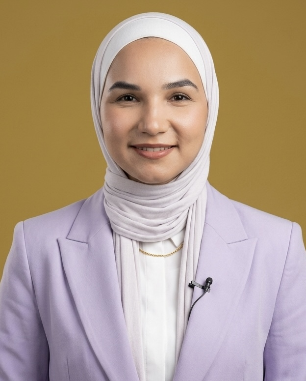
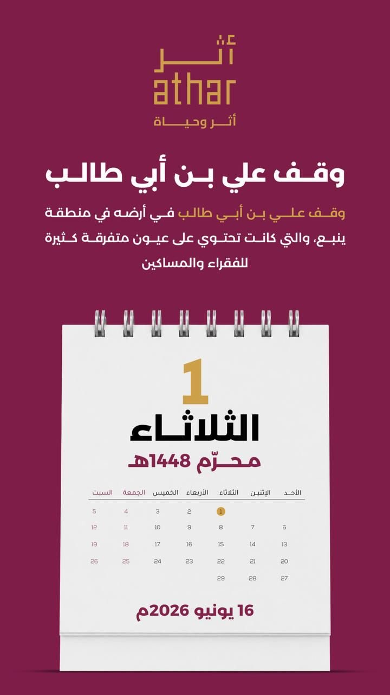
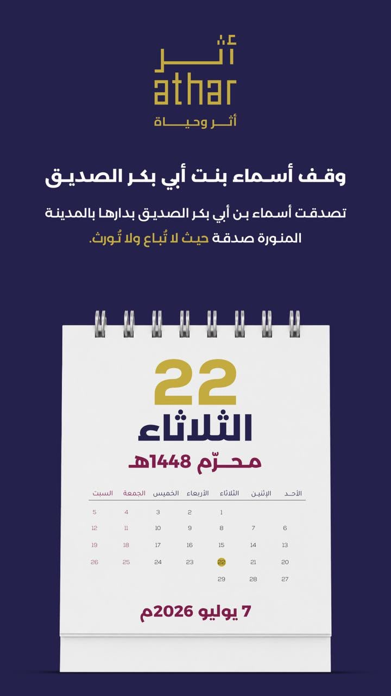
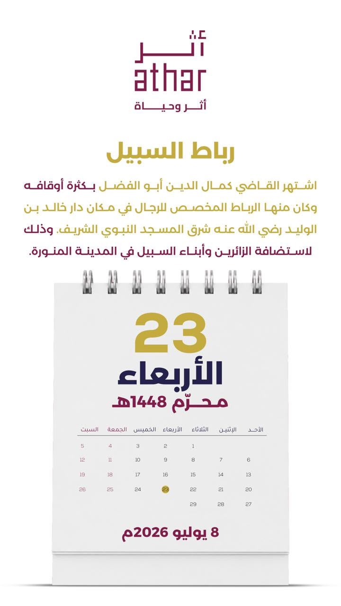
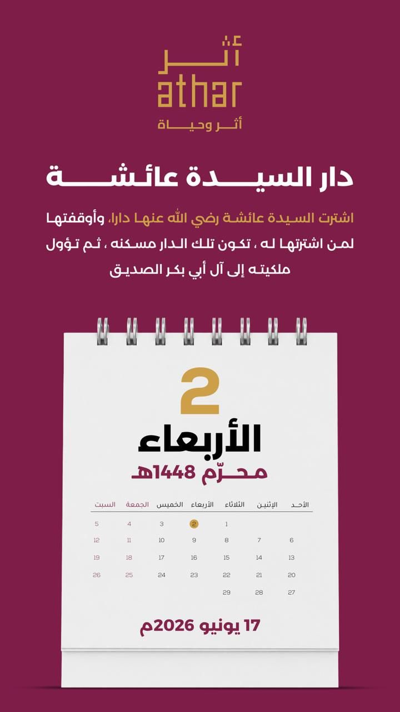

الرؤية
أن نكون المرجعية الإعلامية الأولى للوقف في العالم العربي والإسلامي، ومنصةً تُحيي ثقافة العطاء المستدام في وجدان الأجيال.
مؤسسة أثر للإعلام الوقفي
مسافرٌ أنتَ والآثارُ باقيةٌ فاتركْ لنفسِكَ ما تُحيي به الأثر
في عام 2021 وُلدت مؤسسة أثر للإعلام الوقفي من سؤالٍ بسيط: لماذا تغيب حكايات الواقفين عن شاشاتنا، وهي التي بنت المدارس والمستشفيات وأحيت المدن؟
كان الوقف عبر القرون شريان الحياة في مدننا، غير أن قصصه ظلت حبيسة الأرشيف وسجلات الدوائر. فحملنا على عاتقنا مهمة إعادة هذه الحكايات إلى الناس، بلغة إعلامية معاصرة تمزج بين عمق التوثيق وجمال السرد.
من الأردن كانت البداية، حيث وثّقنا أوقافه العريقة بالصوت والصورة والكلمة، ثم اتسعت العدسة لتشمل نماذج وقفية مضيئة في السعودية وفلسطين وبلدان عربية وإسلامية أخرى، إيمانًا منا بأن أثر الخير لا تحدّه جغرافيا.
الأردن أولًا، ثم العالم العربي، وصولًا إلى العالم الإسلامي بأسره.
أول مؤسسة إعلامية عربية متفرغة بالكامل لقضية الوقف توعيةً وتوثيقًا.
لأن كل وقفٍ حكاية إنسانٍ آمن بأن العطاء أبقى من العمر. نحن نروي هذه الحكايات كي تُلهم واقفين جددًا، فيمتد الأثر جيلًا بعد جيل، وتبقى الحياة تنبض في كل صدقةٍ جارية.
ركيزتان تحددان وجهتنا وتضبطان بوصلة كل عملٍ ننتجه.
أن نكون المرجعية الإعلامية الأولى للوقف في العالم العربي والإسلامي، ومنصةً تُحيي ثقافة العطاء المستدام في وجدان الأجيال.
ننشر الوعي بفقه الوقف وأثره الحضاري، ونوثّق قصص الواقفين الملهمة بمحتوى إعلامي رصين يليق بعظمة هذا الإرث.
من فكرة في عمّان إلى حضور إعلامي يمتد عبر خارطة العالم الإسلامي.
انطلاق مؤسسة أثر من الأردن كأول مؤسسة إعلامية متخصصة بالوقف.
محتوى متكامل يخاطب العقل والوجدان، ويوثّق الوقف بكل الوسائط.
إنتاجاتٌ إعلامية متخصصة تحمل رسالة الوقف إلى الشاشة، بلغةٍ تجمع بين عمق المعرفة ودفء الحكاية، وتصنع من كل حلقةٍ أثرًا يبقى.
تقديم الإعلامي الأستاذ محمد علاونة
برنامجٌ حواريّ يضيء زوايا الوقف الغائبة، ويقرأ فقهه وتاريخه وأثره الحضاري بعينٍ إعلامية رصينة، ليعيد إلى ذاكرتنا حكايات العطاء التي بنت المدن وأحيت الإنسان.

تقديم الآنسة أسيل الصالح
مساحةٌ خاصة تحتفي بحضور المرأة في مسيرة الوقف؛ واقفةً ومستفيدةً وصانعةَ أثر، تسرد نماذج نسائية ألهمت الأجيال بعطاءٍ لا ينقطع، وتكشف عن دورٍ ظلّ حاضرًا في كل حكاية خير.

أؤمن بأن للوقف رسالةً تتجاوز الزمن، وأن توثيقها مسؤولية قبل أن يكون عملاً إعلامياً. لذلك نسعى في مؤسسة أثر إلى إبراز جمال الوقف، ورواية قصصه الإنسانية، وترسيخ قيم التكافل والعطاء؛ ليبقى أثر الخير حيًّا في القلوب والمجتمعات.
لكل وقفٍ حكاية، ورواية هذه الحكايات أمانة تستحق أن تُروى بأجمل صورة.
الوقف المعنوي هو إحدى مبادرات مؤسسة أثر، ويهدف إلى تشجيع أبنائنا وبناتنا على حفظ القرآن الكريم من خلال إصدار شهادة شكر وتقدير تحمل اسم الحافظ أو الحافظة، وتصدر باسم مؤسسة أثر. ما عليكم سوى إدخال اسم الحافظ أو الحافظة ومقدار الحفظ، وستُنشأ الشهادة تلقائياً بصيغة PDF خلال ثوانٍ، جاهزة للحفظ والطباعة والمشاركة.
إصدار شهادة ←كل يوم.. حكاية وقف. رزنامة سنوية تنثر بين أيامكم نماذج وقفية ملهمة من تاريخنا وحاضرنا، بتصميم أنيق يليق بمجالسكم ومكاتبكم.




اجعلوا حكاية وقفٍ ملهمة تفتتح كل يومٍ من أيامكم؛ اشتركوا لتصلكم رزنامة أثر الوقفية أولًا بأول عبر واتساب.
اشترك عبر واتسابسواء كنتم واقفين تحملون حكاية، أو مؤسسات وقفية تبحث عن شريك إعلامي، أو إعلاميين يشاركوننا الشغف — أبوابنا مفتوحة، وقلوبنا قبلها.